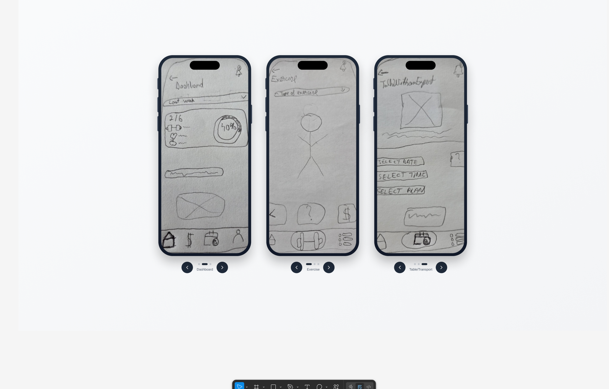
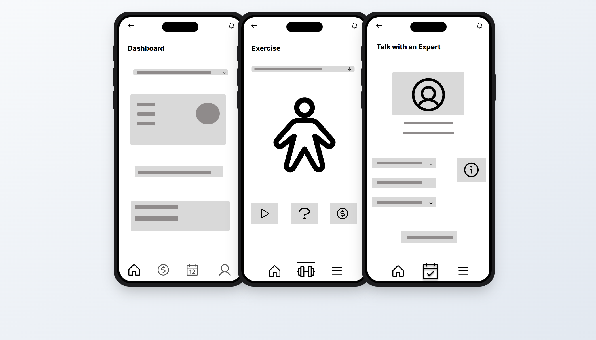
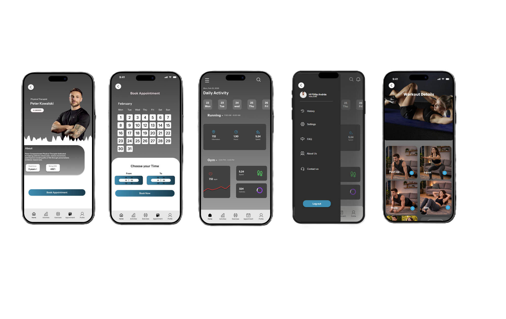

This page provides a detailed breakdown of the 3.10 Hi-Fi Prototype, explaining the design process, key features, and insights gained from the project.
The prototype was developed using Figma, focusing on a step-by-step design approach. Each fidelity stage helped refine the idea from rough sketches to polished interface details.
These early sketches capture the core flow and layout without distraction. The focus here is on structure, screen hierarchy, and key actions like dashboard overview, exercise selection, and expert chat.

The mid-fidelity stage adds more detail, spacing, and navigation clarity. It helps validate the layout and the placement of UI elements before moving into visual styling.

The high-fidelity version presents the final visual direction with polished components, imagery, and refined UI elements. This stage is useful for presenting the concept confidently and testing the final look.

Highlights include intuitive navigation, responsive layouts, and accessibility considerations. The design emphasizes clarity and human-centered digital experiences.
Through this project, I refined my skills in UI/UX design, prototyping, and user research, contributing to my growth as a product designer.